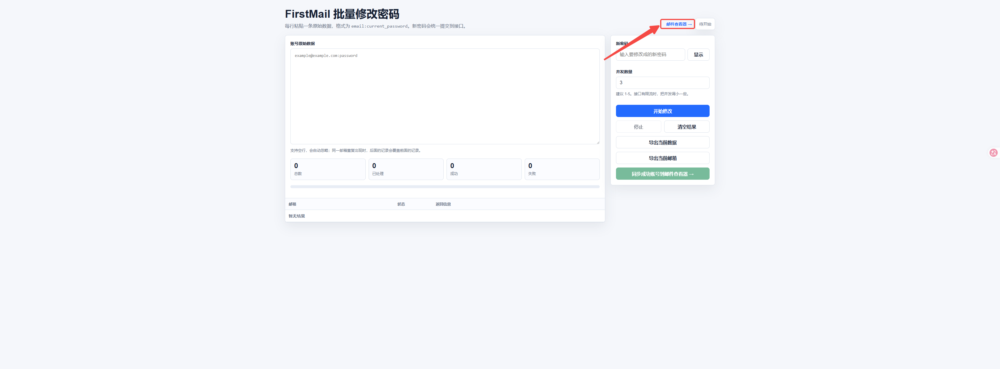
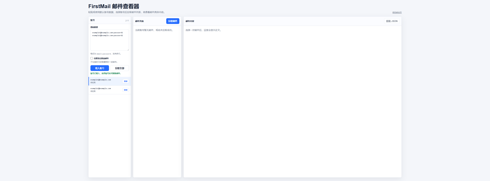
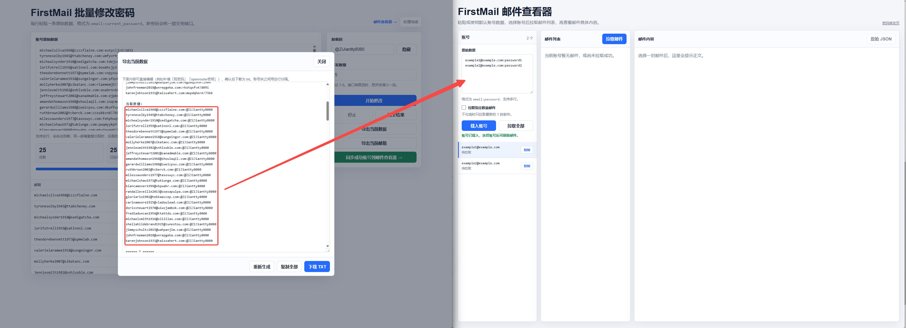
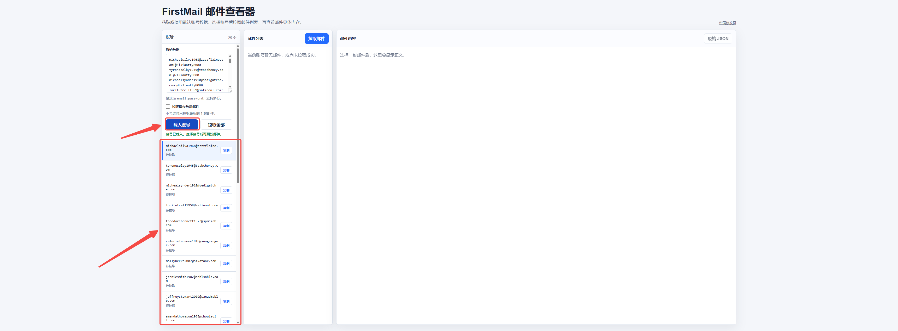
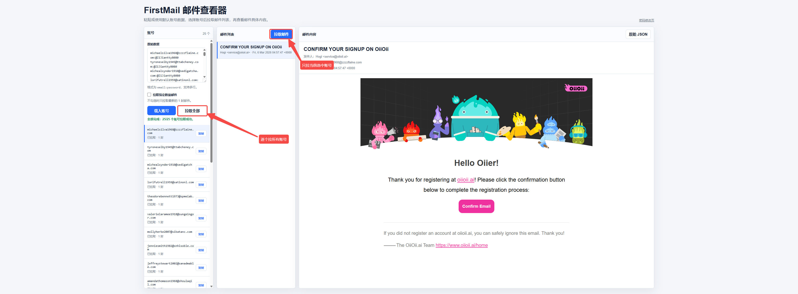
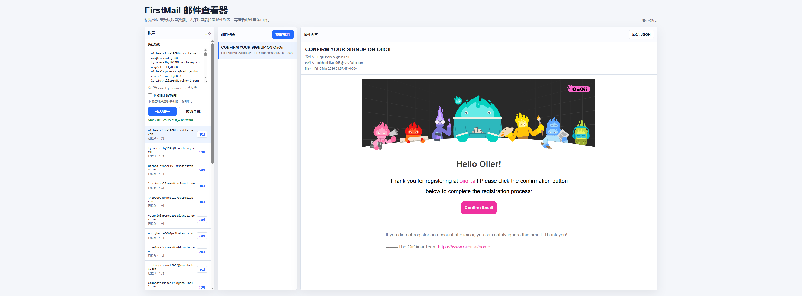
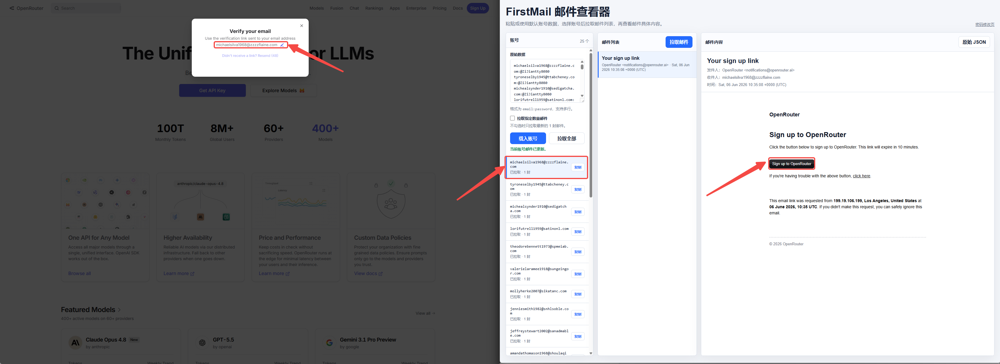

FirstMail 工具 · 使用教程
本工具包含两个页面：批量修改密码和邮件查看器。下面按页面分别讲解，并给出典型工作流和常见问题。
目录
★ 图文操作步骤
以「拉取邮件、获取各项目验证信息」为例，跟着下面 7 步走即可。点击任意截图可放大查看。
输入访问网址：在浏览器打开 https://firstmail.nexoraivision.com，进入「批量修改密码」首页。

进入邮件查看器：点右上角 邮件查看器 →，跳转到 https://firstmail.nexoraivision.com/messages.html。

粘贴账号数据：在左侧「原始数据」每行粘贴 邮箱:密码；也可以从「批量修改密码」页点「同步成功账号到邮件查看器」自动带过来。

载入账号：点 载入账号，左下方出现账号列表。

拉取邮件：左侧选中一个账号 → 点中间蓝色 拉取邮件（只拉当前账号）；或点 拉取全部 逐个拉所有账号。

查看邮件正文：中间「邮件列表」按时间从近到远排列，点一封 → 右侧显示发件人 / 收件人 / 时间 / 正文。

登录各项目获取信息：在各类项目（如 OpenRouter）注册/登录时填入这些邮箱，再回到邮件查看器拉取，即可拿到验证链接、验证码等信息完成验证。

① 总览与访问
启动服务后，在浏览器打开：
- 批量修改密码：
https://firstmail.nexoraivision.com - 邮件查看器：
https://firstmail.nexoraivision.com/messages.html
两个页面顶部可互相跳转，本教程页也能从顶部导航返回任一页面。
邮箱:密码，每行一条；空行会自动忽略；同一邮箱重复出现时，后面的会覆盖前面的。② 批量修改密码
把一批邮箱的密码统一改成同一个新密码。
基本步骤
- 在「账号原始数据」里每行粘贴
邮箱:当前密码。 - 右侧「新密码」填要改成的新密码（点「显示/隐藏」可切换明文）。
- 「并发数量」建议 1-5，接口限流时调小。
- 点 开始修改。上方四个数字实时显示总数 / 已处理 / 成功 / 失败，下方进度条和结果表逐条更新。
- 需要中途停止点 停止；清空结果表点 清空结果。
导出当前数据
点 导出当前数据 弹出一个可编辑窗口，已按固定格式预填好内容，可直接编辑后下载为 txt。
导出内容结构：顶部是两个汇总块，下面是每个账号的编号详情块。
原始数据：
邮箱A:原密码
邮箱B:原密码
...
当前数据：
邮箱A:新密码
邮箱B:新密码
...
====== 1 ======
原始数据：邮箱A:原密码
当前数据：邮箱A:新密码
邮箱：邮箱A
现密码：新密码
原密码：原密码
openrouter密钥：现密码=新密码、原密码=旧密码；openrouter密钥留空，可在弹窗里手动补填。点 下载 TXT 保存，或 复制全部，或 重新生成 恢复成最新数据。
导出当前邮箱
点 导出当前邮箱，弹窗里是仅邮箱地址（每行一个）的列表，可编辑后下载 txt。
同步成功账号到邮件查看器
批量改密码跑完后，点绿色的 同步成功账号到邮件查看器 →：会把改密成功的 邮箱:新密码 传给邮件查看器并自动跳转，在那边点「拉取全部」即可直接拉邮件，不用重新粘贴。
③ 邮件查看器
按账号拉取邮件、查看正文。
基本步骤
- 左侧「原始数据」每行粘贴
邮箱:密码（或从改密码页同步过来）。 - 点 载入账号，左下方出现账号列表。
- 左侧选中一个账号 → 点中间的蓝色 拉取邮件，只拉当前账号；或点 拉取全部 逐个拉所有账号。
- 中间「邮件列表」按时间从近到远排列，点一封 → 右侧显示发件人 / 收件人 / 时间 / 正文。
拉取数量开关
账号区有个 拉取指定数量邮件 复选框：
| 状态 | 行为 |
|---|---|
| 不勾选（默认） | 只拉取最新的 1 封邮件，速度快，还能绕过靠后那封可能导致解析报错的邮件。 |
| 勾选 | 下方出现「拉取邮件数量」输入框，按填写的条数拉取（1-100）。 |
其它操作
- 账号列表每行右侧的 复制 按钮：一键复制该邮箱地址，并同时切换到该账号。
- 账号状态会实时显示：待拉取 → 拉取中 → 已拉取 · N 封，失败则显示错误。
- 右上角 原始 JSON：查看当前邮件的原始接口返回，排查问题时很有用。
④ 典型工作流
- 在「批量修改密码」粘贴
邮箱:当前密码，填新密码，点 开始修改。 - 跑完后点 同步成功账号到邮件查看器 →，自动跳转过去且账号已填好。
- 在「邮件查看器」点 拉取全部（默认每个账号拉最新 1 封），查看各账号收到的验证邮件等。
- 需要留档时，回到改密码页点 导出当前数据 或 导出当前邮箱，编辑后下载 txt。
⑤ 常见问题
拉取邮件时报 IMAP error: 'utf-8' codec can't decode ...
这是上游 FirstMail 接口的错误：某封邮件用了非 UTF-8 编码（常见于中文老编码或附件二进制），接口解析时崩了，不是你的账号或密码问题。处理办法：
- 不勾选「拉取指定数量邮件」，只拉最新 1 封——若问题邮件是旧邮件就绕过去了。
- 或勾选后把数量调小（如 3）重试。
- 仍不行就这个账号暂时去 FirstMail 网页版看；其它账号不受影响。